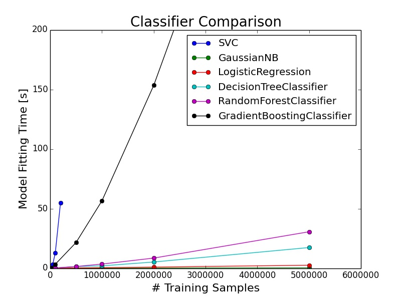
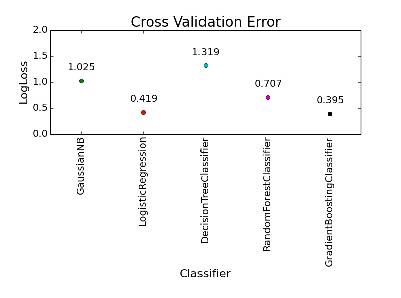
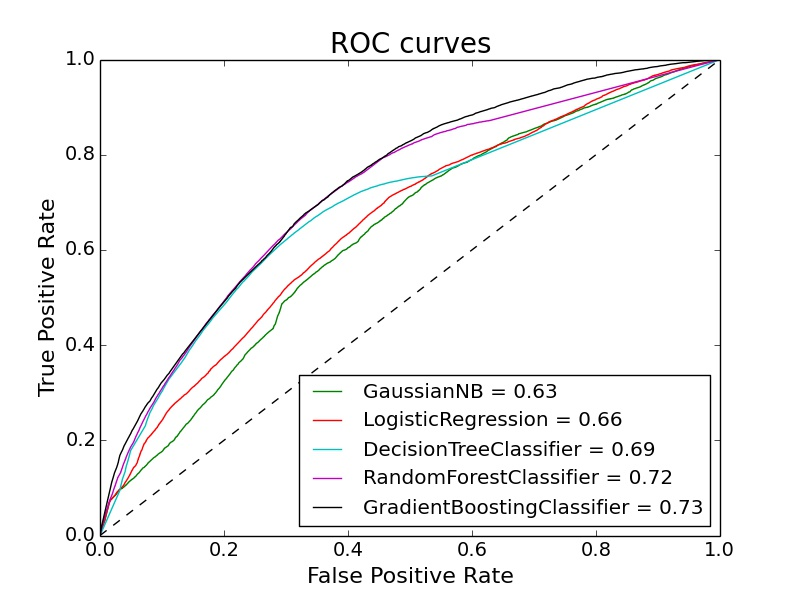

|
Goal: The goal of the competition was to predict whether an ad impression would produce a click from the user. The evaluation metric was minimizaton of the logarithmic loss. Data/Code: Here is the link to the actual Avazu Kaggle competition with all of the data and information. The code for my solution is on GitHub. Analysis: Here is a basic explanation of my code and analysis that I used to solve this binary classification problem. I used Python with the scikit-learn library to perform most of the calculations. I hashed the values in each column taking the top 95% of values in order to avoid the long tail. I have compared the performance of several classifiers in the figures below. Figure 1. In order to understand which classifier to utilize for my predictions, it is important to understand computational limitations. This graph shows the model fitting time for several classifiers that I used, plotted as a function of the number of training examples. My machine has an Intel Core i7-2600K 3.4GHz CPU and 8GB RAM. Both the logistic regression and the Gaussian Naive Bayes classifiers were very fast, performing under 30 seconds for 5 million training examples. The support vector machine classifier (SVC) did not scale very well and I stopped testing after only 50,000 training examples. Figure 2. The cross validation set logloss error is presented here for several classifiers. I used 2 million training examples with a train / cross validation set split of 90% / 10%, respectively. Clearly, the logistic regression as well as the gradient boosting classifiers produced superior results. Figure 3. The Receiver Operating Characteristic (ROC) curves for the same cross validation set used to generate Figure 2 are shown here. The area under the curve (AUC) is printed next to the classifier name in the legend. Conclusion: The logistic regression classifier was very fast and produced good results. It was useful in order to quickly iterate over versions of the solution as I performed feature engineering and improved the code. The gradient boosting classifier produced the best overall results, at the expense of the long training time. Leaderboard: My overall standing on the final leaderboard is 1246 / 1604 with a logloss score of 0.4229314. |